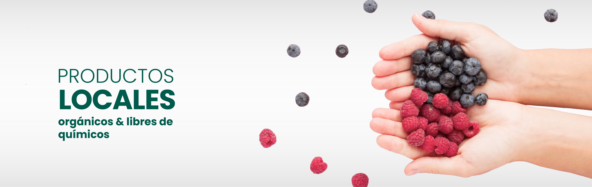

-

-

- 
-

¿Qué es La Feria en línea?
Una iniciativa creada gracias al esfuerzo y compromiso del Consejo Nacional de Producción (CNP) y productores nacionales.
Nuestra misión es promover y apoyar la producción agrícola e industrial costarricense, impulsando el desarrollo sostenible y la economía del país.
En un mundo cada vez más conectado, hemos desarrollado esta plataforma para facilitar a los agricultores la exhibición y venta de sus productos, llegando así a un público más amplio y diverso. Al mismo tiempo, ofrecemos a los consumidores la comodidad de adquirir productos frescos y de alta calidad desde la comodidad de sus hogares.
La feria en línea es un espacio donde la calidad se une a la conveniencia. Con una amplia variedad de productos, garantizamos una experiencia de compra segura y satisfactoria para todos nuestros usuarios.
Apoyar la producción nacional nunca había sido tan fácil y accesible.


Únete a nosotros en este emocionante viaje hacia un sector agrícola más próspero y sostenible. ¡Descubre, apoya y disfruta de La Feria en Línea del CNP!